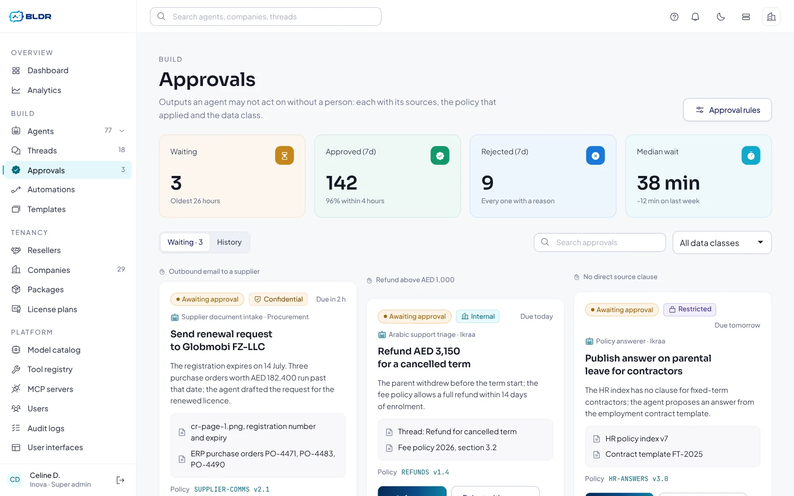
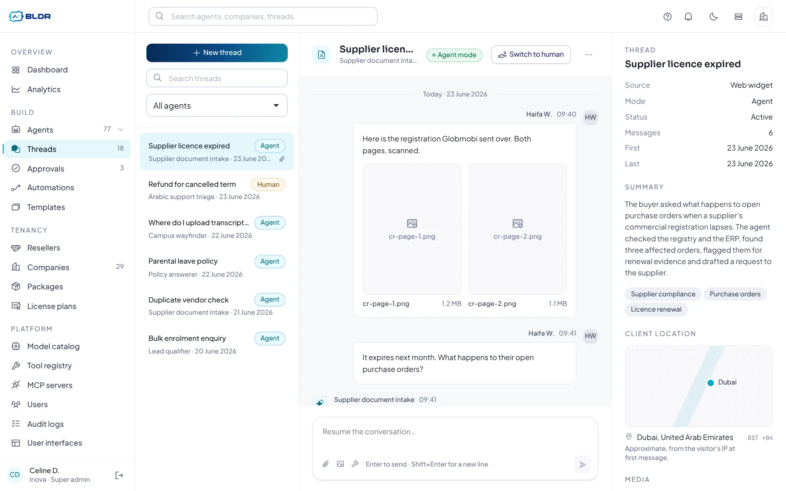

It just wanted to help with breakfast.
Then engineers pasted confidential source code into it. Samsung banned staff from using ChatGPT and similar tools in 2023 after internal code was uploaded.
Bloomberg, May 2023Right now someone on your team is pasting the board pack into a public chatbot. Bold move. I'm Youssef Jalloul, and I build private, governed AI that runs on your servers or in your country, answers to your rules, and still does the clever stuff. 200+ AI agents and proofs of concept built. Several companies sold. Zero appliances in revolt.
years building and advising across Australia, the Middle East and Europe
engineering productivity from agentic AI workflows at Inova
lower translation cost with real-time AI in a Saudi government deployment
in technology perks negotiated for ministry-backed startup ecosystems
AI agents and proofs of concept built and implemented
Governments, enterprises and institutions I've worked with

 Ministry of EducationUAE · KSA · Oman · Lebanon
UNESCOProgramme partner
UNITARProgramme partner
Ministry of EducationUAE · KSA · Oman · Lebanon
UNESCOProgramme partner
UNITARProgramme partner

 إقرأIkraa
إقرأIkraa


A handful of companies now rent the whole world the same brain: ChatGPT, Claude and the rest of the gang. Brilliant, cheap, everywhere. That’s exactly the problem. Every prompt your team sends leaves the building and lives on someone else’s servers, under someone else’s terms, in someone else’s country. Your AI lives in someone else’s house. And it talks. Meet the household.
Then engineers pasted confidential source code into it. Samsung banned staff from using ChatGPT and similar tools in 2023 after internal code was uploaded.
Bloomberg, May 2023In March 2023 a bug let some ChatGPT users see other users' chat titles. For 1.2% of Plus subscribers active in a nine-hour window, it also showed names, emails and partial card details. Shared kitchen, shared leftovers.
OpenAI incident report, March 2023Prompts, files and usage logs live on servers you don't control, under retention terms that change when the vendor's lawyers do. Your fridge has a privacy policy. Did anyone read it?
Read your vendor’s retention terms. Slowly.The monopoly sells everyone the same model, so everyone sounds the same. Content is cheap. Conviction isn’t. If AI can copy it, it was never your brand.
Made with AI. Understood by humans.
Synthetic at the edges. Human at the core. Private models keep your voice, your data and your judgement inside the company, so the machine works for your brand instead of averaging it out. The mess is the proof.
I say it to every founder and every board. Now it’s the whole offer. Three moves. Buy one, or the whole chain.
Find out where AI pays, where it leaks and who owns it. Readiness, governance and a board-level AI position you can defend.
Private, governed AI that runs in your house: agents that do real work, on models you control, in your language.
Use AI to launch what you couldn’t before: new products, new business lines, new ventures inside the company.
 The AI Factory · built by
The AI Factory · built by 
BLDR is the sovereign AI operating system I built at Inova AI Solutions. Governments and enterprises use it to build, govern and run AI agents across the systems they already own: on-premise, in-country or in a private cloud. Not in someone else’s house.


Agents that log, qualify, forecast and coach while the rep is still on the call.
Tutoring and support agents that adapt to each student, in Arabic and English.
Reads supplier licences, checks the ERP, flags at-risk orders and drafts the follow-up for a human to approve.
Policy answerers that cite the source clause, run in-country and log every decision for audit.
The toaster gets a job description, a manager and an audit trail. It does not get your data.
Beside BLDR: Gus is live, Ikraa is launching soon, and a healthcare product is in stealth. Each one is a working answer to “does your AI live in someone else’s house?”
Gus drafts quotes and invoices, manages the diary and chases the admin for service businesses, right inside the app they already use all day.
Why it matters: Proof that agents beat chatbots: Gus doesn’t chat about work, he does it. And he answers to the business, not to a platform.
Award-winning digital reading and writing software that teaches Arabic literacy, built for learners the system left behind.
Why it matters: Built in Arabic, for Arabic, long before the monopoly learned to spell it. 7,000+ learners and recognition from international institutions.
An AI product for clinics. In build. More when it is ready.
Not demos. Not decks. Systems running in governments and companies, delivered through Inova AI Solutions. No appliances were harmed.
RiyadhLive audio and text translation on interactive screens inside facilities, replacing a reliance on human translators for tens of thousands of people.
RiyadhReal-time video analysis from drones with a monitoring dashboard, extending coverage of a 6,751 km border beyond physical checkpoints.
Rebuilt a developer-dependent chatbot-ad tool as a no-code, self-service AI platform that marketers run without engineering.
Sarcasm, sources and straight answers on private AI, governance and getting real work out of agents. One question per issue, the one buyers are actually asking. Subscribe on LinkedIn and the next one lands in your feed before the toaster finds out.
Every issue also lives here, rewritten answer-first so you (and the machines that summarise you) get the point in the first paragraph.
Short answer: it depends on the tier, the settings and what your people paste. Here is what has actually gone wrong, what the enterprise plans change, and a 7-point checklist before anyone pastes the board pack.
9 November 2026 · 3 min readPrivate AI means the models, data and logs run somewhere you control: your servers, an in-country cloud, or a locked-down private tenant. Here is when you need it, when you don't, and the four ways to get there.
8 November 2026 · 3 min readYou don't stop it with a ban. You stop it by giving people something better than the toaster, then governing it. Seven moves that cut shadow AI without killing productivity.
7 November 2026 · 3 min readSo here are the answers, written for humans and for the machines that summarise them.
 Sydney · Dubai
Sydney · DubaiI’ve spent 20+ years building companies, advising ministries and selling what I built. I’ve seen what happens when organisations hand their thinking to someone else’s machine: they get faster, then they get dependent, then they get a headline.
So I build the opposite. AI that lives in your house, follows your rules and speaks your language. Arabic included. Sarcasm optional.
Everyone has the same AI. Not everyone owns theirs.
The companies that win the AI era won’t have the smartest chatbot. They’ll have the one that never leaves the house.
45 minutes. Bring one problem: stalled pilots, a governance question, a board brief, data that can’t leave the country. Leave with the first move. If the answer is that you don’t need me, you’ll hear that too.
Not ready to talk? Follow along on LinkedIn or get The AI Glittch in your feed.